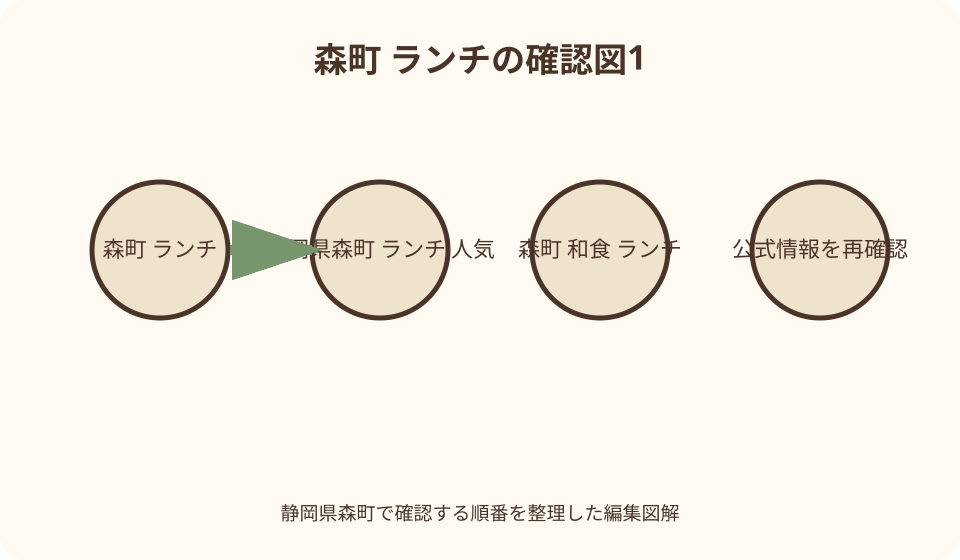
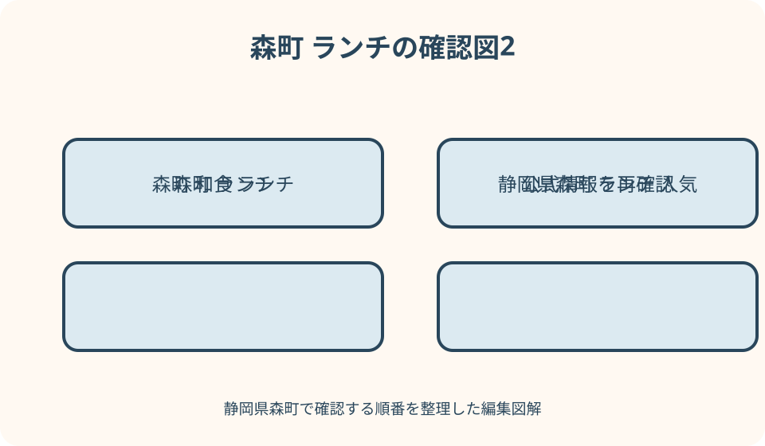

ランチ・カフェ｜最終確認 2026-08-10
静岡県森町のランチ総合ガイド｜和食、季節料理、町なか散策を組み合わせる
森町の昼食は、店を順位で選ぶより、予約の可否、昼営業日、食べたい料理、駐車または遠州森駅からの移動、同行者の座席条件を先にそろえる方が失敗を減らせます。町なかで和食を選ぶなら柏屋、季節料理を予約して訪ねるなら魚伊が公式観光情報上の候補です。さゝ川は観光協会ページで夜のみと案内されているため、ランチ候補へ混ぜず夕食記事で扱います。2026年8月10日に取得した価格と営業時間は変更され得るため、訪問前に必ず各店へ再確認してください。
最初に決めるのは店名ではなく、昼食後にどこへ行くか
森町で昼食を探すとき、検索結果の写真だけで一店を決めると、町なかを歩きたいのに郊外の店を選んだり、予約が必要な日に当日訪問したり、昼営業のない店を候補へ入れたりします。食べたい料理に加え、遠州森駅、秋葉街道沿いの町並み、小國神社、アクティ森など、食事の前後にどこへ行くかを決めることが最初の一歩です。
中心部の散策を主目的にするなら、森地区の本町周辺で昼食と町並みをつなぐ方法があります。森町観光協会は、本町に秋葉街道沿いの伝統的な建築が点在し、宿場町の趣が残ると紹介しています。食べ終えたらすぐ車で移動するのではなく、同行者の体力と天候が許せば、建物や菓子店を短く見て歩く余白を作れます。
遠州森駅から始める人は、駅を単なる乗降場所ではなく観光の玄関口として扱います。天竜浜名湖鉄道公式は、駅本屋と上りホームが国の登録有形文化財で、駅にバスとタクシーの乗り換えがあると案内しています。ただし、各飲食店までの徒歩分数を一律に決めず、地図、道路、暑さ、同行者の歩行条件を確認してください。
この記事では『一番おいしい店』を決めません。味は注文品、季節、個人の好みによって異なり、筆者が体験していない料理を評価することもできないからです。公式情報で確認できる料理の種類、昼営業、定休日、駐車場、予約案内を比較し、読者が自分の一日に合う店を決められる材料を示します。
公式情報の読み方——掲載価格と営業時間には確認日を付ける
森町公式の観光案内は、町の観光に関する問い合わせ先として森町観光協会を案内しています。観光協会の個店ページは、店の概要、住所、電話、営業時間、定休日、駐車場をまとめて比較する入口になります。ただし、町や観光協会の案内は予約台帳や当日の仕入れと直結しているわけではありません。最終確認は各店へ行います。
この記事で記す営業時間と価格は、2026年8月10日に観光協会ページから取得したものです。取得日は、訪問日まで情報が変わらないことを保証しません。祝日、貸切、法事、仕出し、食材の都合、臨時休業によって昼営業が変わる場合があります。電話では訪問日、人数、到着予定、希望する料理を伝え、営業と席の両方を確認してください。
価格は、料理名だけで比較せず、税込表示か、飲み物やデザートを含むか、子どもが一人前を注文するかまで確認します。観光協会の掲載価格が現行と異なる可能性もあるため、家族全体の予算は店へ聞いた最新金額から計算します。この記事の数字を印刷して、そのまま支払額として持参しないでください。
営業時間は『店へ着く時刻』ではなく『注文できる時刻』として確認します。昼の終了が14時でも、入店や注文の締め切りが別に設けられる場合があります。午後の列車、予約、参拝がある人は、食べ終える必要がある時刻を先に伝え、無理な場合は早い時間か別の店へ切り替えます。
公式ページに駐車場ありと書かれていても、入口の位置、空き、車幅、乗降スペースまでは分かりません。町なかでは狭い道や歩行者にも注意が必要です。大きな車、車椅子、ベビーカー、雨の日の乗降がある場合は、駐車場所と店までの段差を予約時に尋ねることが実用的です。
柏屋——本町の町並みと季節の御膳をつなぐ候補
森町観光協会は柏屋を、森地区にある歴史を感じる建築と、季節ごとに異なる御膳を提供する店として紹介しています。掲載住所は静岡県周智郡森町森135です。秋葉街道沿いの本町の町並みと同じ森地区にあるため、昼食だけで往復せず、食事前後の散策を組み合わせたい人が地図上で比較しやすい候補です。
観光協会ページには、ちらし、寿司ランチ、夏のうどん、冬の自然薯のとろろなどの例があります。これは毎日すべてを選べるという意味ではなく、季節ごとに内容が異なることを示す例として読みます。特定の品を目当てにする人は、訪問日の御膳内容と売り切れの可能性を店へ確認してください。
2026年8月10日取得時点の観光協会掲載は、営業時間11時30分から14時、定休日水曜日、駐車場30台、御膳1650円です。これらは変更され得ます。到着が遅い、祝日に当たる、団体で利用する場合は、電話0538-85-5418または掲載される店の公式Instagramで最新案内を確かめます。
建物の雰囲気を目的に含める人は、座席の形式と移動条件も確認します。歴史ある建物であることと、すべての席へ段差なく移動できることは同じではありません。高齢者、車椅子利用者、膝を曲げにくい人、乳幼児連れは、椅子席、座敷、入口、トイレ、ベビーカー置場を予約時に具体的に尋ねてください。
柏屋を選ぶ日は、食後の予定を詰めすぎない方が町なかを味わえます。本町の建築を眺める、和菓子店へ寄る、遠州森駅へ戻るなど、短い行動を一つだけ加えます。散策する場合は店舗の駐車場へ長時間置いたままにせず、食後も利用できるか確認し、必要なら公共の移動手段へ切り替えます。

魚伊——季節料理を予約し、昼の予定を確定させたい人の候補
森町観光協会は魚伊を、鮮魚店から料理店へ変わり、季節に沿った料理、宴会、法事、お食い初め、仕出しを扱い、昼にランチ営業もする店として紹介しています。掲載住所は静岡県周智郡森町睦実1670-1-1-1です。本町の店と同じ位置だと思い込まず、駅や次の目的地との経路を地図で確認します。
個店ページには『都合により休業の場合あり』と『電話での予約をしていただけるとありがたい』という案内があります。この二つは、魚伊を昼食候補にするうえで最も大切な情報です。営業日らしく見えても当日利用できるとは限りません。訪問日が決まった段階で電話し、昼営業と席を同時に確認します。
2026年8月10日取得時点の掲載は、昼11時30分から14時、夜17時から22時、定休日は月曜・火曜、駐車場は店舗周辺と店裏の道沿いに約10台、昼御膳は税込1300円です。料金、休み、駐車位置は変わり得るため、電話0538-85-2012へ再確認し、路上や別店舗へ誤って停めないようにします。
季節料理を選ぶときは、『魚料理が食べたい』だけでなく、生ものを避けたい人、量を調整したい人、アレルギーがある人がいるかを予約時に伝えます。観光協会の説明は料理の方向を知る資料であり、当日の献立や個別対応を保証するものではありません。対応できない場合も含め、店の回答を受けて候補を決めます。
食事後に小國神社やアクティ森へ車で向かう場合は、終了希望時刻を予約時に伝えます。ゆったり食べる季節料理と、分刻みの観光予定は相性がよくありません。次の予約へ間に合わせるために食事を急がせるより、午後の予定を一つ減らし、食事の時間を確保する方が落ち着いた一日になります。
さゝ川は昼候補へ入れない——夜営業を検索結果から見分ける
森町観光協会には、さゝ川も和食やうなぎなどを提供する日本料理店として掲載されています。刺身、天ぷら、うなぎのほか、季節によって森町のトウモロコシや次郎柿を使う例が紹介されています。しかし、同じ『森町の和食』でも、取得時点の案内は夜営業のみです。ランチ一覧へ無理に含めてはいけません。
2026年8月10日取得時点の掲載は、営業時間17時から23時、注文終了22時、定休日月曜・火曜、駐車場5〜6台程度です。昼食を探す読者にとっては、料理の魅力より『昼は営業していない』という条件が先に来ます。昼に店頭へ行って確認するのではなく、夕食候補として別の予定へ移します。
この区別は、検索結果の短い説明だけでは見落としやすい点です。店名、料理写真、和食という分類が一致しても、営業時間が検索意図と一致するとは限りません。森町に限らず、飲食店を比較するときは、営業曜日、昼の時間、予約、最新更新日を一組で見ます。
夜に利用したい場合も、観光協会ページの数字を固定情報として扱わず、電話0538-85-3636で営業を再確認します。この記事では昼食候補として評価も順位付けもしません。和食店を漏れなく列挙することより、読者が昼に入れる店を正しく選べることを優先します。
遠州森駅から町なかへ——徒歩時間を断定せず帰りの列車から逆算する
天浜線公式は遠州森駅を森町観光の玄関口と紹介し、住所を森町森980-2と掲載しています。駅本屋と上りホームは国の登録有形文化財です。列車で来た人は、駅へ着いてすぐ店へ急ぐだけでなく、駅舎そのものを見る短い時間も予定へ入れると、町なか散策の入口がはっきりします。
駅設備案内には、バスへの乗り換えとタクシーがあることが掲載されています。これを『いつでも待機している』という保証と受け取らず、必要な人は事前に運行または配車を確認します。高齢者や小さな子どもと歩く場合、地図上の距離だけで徒歩を決めず、暑さ、雨、荷物、帰路を含めて移動手段を選びます。
徒歩で町なかへ向かう場合は、行きの到着時刻より帰りの列車を先に決めます。食事の待ち時間、会計、駅までの移動、ホームへ入る時間を引き、店を出る時刻を設定します。注文時に退店希望を伝えても、混雑や調理によって必ず間に合うとは限らないため、余裕のある便を選んでください。
車で来る同行者と駅で合流する場合は、駅前で長時間待たず、乗降場所と時刻を決めます。店の駐車場へ集合すると道を間違える可能性があるため、初めての人は駅など分かりやすい地点を使う方法があります。店へ向かう前に、予約名、人数、遅れる場合の連絡担当を確認します。
食後に本町を歩くときは、歩道、横断、生活道路へ配慮します。観光協会が紹介する歴史的建物は、町の日常の中にあります。撮影のために車道へ出る、店先を塞ぐ、民有地へ入ることは避けます。昼食と町並みをつなぐ目的は、名所を急いで集めることではなく、歩ける範囲を丁寧に見ることです。

和食と季節料理は、献立より先に食べられない物を伝える
季節の御膳や魚料理は、その日の内容が変わること自体が特徴です。事前に見た写真と同じ品が出ることを期待せず、苦手な食材、アレルギー、生もの、骨のある魚、塩分や量への希望を予約時に伝えます。店が対応できる範囲を聞き、難しい場合は別の候補へ切り替えます。
子どもには、大人の御膳を取り分ければ足りると決めつけないことが大切です。子ども向け料理、食器、椅子、持ち込み離乳食、アレルギー対応、注文人数の数え方を店へ聞きます。店の静けさや他の予約客へ配慮し、待ち時間を過ごせる小さな道具も用意します。音の出る動画だけを前提にしない方が安心です。
高齢者と訪れる場合は、料理の柔らかさだけでなく、駐車場から入口までの距離、段差、靴を脱ぐか、椅子席か、トイレの位置を確認します。『和食店だから座敷』とも『駐車場ありだから入口横』とも限りません。予約時に歩行条件を具体的に伝えると、利用できる席があるか判断してもらいやすくなります。
法事やお食い初めの利用例がある店でも、通常のランチ客が同じ部屋や料理を当日に頼めるわけではありません。家族行事では、開始時刻、人数、子どもの年齢、席、料理、予算、写真撮影、支払いを事前に相談します。行事の進行を店任せにせず、家族側の代表者を一人決めます。
食後に運転する人がいる場合は、料理に酒が含まれる可能性や、同席者の飲酒注文を明確にします。地域の食事を楽しむことと、安全に次の場所へ移動することは両立させなければなりません。運転者を途中で替える計画ではなく、出発前に決め、全員へ共有してください。
満席・臨時休業の代案——第二候補は同じ条件で選ばない
第一候補が満席だったとき、同じ時間、同じ料理、同じ町なかの別店だけを探すと、次も条件が合わない可能性があります。第二候補は、食事開始を早める、軽食へ変える、車で別地区へ移る、昼を簡素にして夕食を予約するなど、条件を一つ変えて用意します。
柏屋を町並み散策と組み合わせた人は、満席時に駐車だけして周辺を歩かず、店舗へ駐車利用の可否を確認します。食事ができない場合は一度移動し、別の駐車場所から散策する方が安全です。魚伊を予約せず訪ねる人は、都合による休業があるという掲載を前提に、到着前に電話します。
公共交通の人は、第二候補までの移動で帰りの列車を失わないことを優先します。遠い店へタクシーで移る前に、配車、所要時間、食事終了、帰りの便を確認します。難しければ、町なかの軽食や持ち帰り品へ切り替え、次回の予約先を一つ決めて帰る方法もあります。
子どもや高齢者が空腹で待てない場合は、名店に並び続けることを目的にしません。すぐ利用できる店へ切り替える、持ち帰りを選ぶ、休憩して早い夕食へ変更するなど、体調を優先します。人気という言葉は、長時間待つことを正当化する基準にはなりません。
臨時休業を知った後、非公式な口コミの営業時間を頼りに別店へ急ぐのではなく、各店の公式SNS、観光協会ページ、電話の順で確認します。確認できない店へ向かう場合も、入れない可能性を家族へ伝えます。代案が二つとも成立しなければ、昼食を旅の主目的から外す決断も必要です。
良い点——昼食を町並み、駅、季節の農産物へつなげられる
良い点の第一は、町なかの和食を歴史的な建物や秋葉街道の町並みと一緒に考えられることです。食事だけなら一時間でも、駅舎や本町を短く歩けば、森町の形を自分の足で確かめられます。店から店へ買い回るのではなく、一つの地区に時間を置く訪ね方ができます。
第二は、季節によって献立の例が変わり、森町の自然薯、トウモロコシ、次郎柿など地域の産物へ関心を広げられることです。ただし、紹介された食材が訪問日に出るとは限りません。出会えなかった品を欠点とせず、いつの季節に扱われるかを尋ね、再訪の手掛かりにします。
第三は、予約を通じて同行者の条件を事前に相談できることです。席、量、食べられない物、終了希望を伝える作業は手間ですが、当日店頭で初めて困る可能性を減らします。小さな町の店だから何でも融通が利くと期待せず、対応できる範囲を聞いて選ぶ姿勢が互いに負担を減らします。
第四は、遠州森駅という明確な玄関口があることです。列車、駅舎、町なか、昼食を一続きにすれば、車で目的店の駐車場だけを往復するのとは違う景色が見えます。列車本数と歩行条件という制約もありますが、時間を絞ることで、昼の町を丁寧に見る行程になります。
注文したい点——観光案内と当日営業の間を埋める確認が必要
注文したい点の第一は、観光協会の個店ページが比較に便利である一方、価格や営業時間がいつ店へ確認されたものか、訪問者には分かりにくいことです。ページに確認日と更新履歴が明示され、店舗公式の最新案内へ直接進めると、古い数字を現行と思い込む危険を減らせます。
第二は、子ども椅子、座席、段差、車椅子、アレルギーなど、同行者が店を選ぶための情報が一覧で比較できないことです。設備を一律の記号で断定するのではなく、『予約時に確認』『対応席あり・要相談』のように、店へ尋ねる入口が示されると利用者が準備しやすくなります。
第三は、町なかの飲食店と遠州森駅、本町の町並み、公共駐車の関係が一枚で見えにくいことです。店の専用駐車場を観光散策へ流用しないためにも、徒歩、バス、タクシー、公共の立ち寄り地点を組み合わせた地図があると、車を置いたままにする行き違いを減らせます。
第四は、昼営業と夜営業を検索一覧で区別しにくいことです。さゝ川のように和食店として魅力的でも、昼食の検索意図とは合わない店があります。『ランチ』『夜のみ』『予約推奨』『不定休あり』を同じ位置へ表示すれば、店へ行ってから利用できない事態を減らせます。
対案・結論——三つの質問で一店を決め、第二候補は条件を変える
第一の質問は『昼食後にどこへ行くか』です。本町を歩くなら町なか、神社や体験施設へ車で向かうなら駐車と退店時刻、列車で帰るなら駅への移動を優先します。料理写真より先に地図へ置くことで、食事のための往復を減らせます。
第二の質問は『同行者が座って食べられる条件は何か』です。子ども椅子、椅子席、段差、量、アレルギー、トイレを整理します。予約電話では、希望をすべて通す交渉ではなく、その店で安全に利用できるかを一緒に確認します。難しい回答なら早めに別店へ移ります。
第三の質問は『何時までに店を出るか』です。営業時間内に入れることと、次の予定へ間に合うことは別です。列車、参拝、体験予約から逆算し、終了希望を伝えます。料理を急がせる必要がある計画なら、次の予定を減らすか、短時間で利用できる昼食へ変えます。
結論として、柏屋は本町の町並みと季節の御膳をつなぐ候補、魚伊は季節料理を電話予約して昼の予定を確定したい人の候補です。さゝ川は取得時点で夜のみのため、ランチ候補から外します。第二候補は、同じ和食店をもう一軒並べるだけでなく、時間、地区、食事量の一つを変えて準備してください。
大石の視点——小さな町の店を、無理な予定の受け皿にしない
私は、地域の飲食店を紹介するとき、観光客の予定を何でも受け止めてくれる場所として書かないことが大切だと考えます。仕入れ、仕出し、法事、少人数の営業など、店にはその日の事情があります。電話で確認することは店を疑う行為ではなく、互いの予定を合わせるための準備です。
予約時には、特別扱いを求める前に、訪問日、人数、年齢、到着、退店、食べられない物を簡潔に伝えます。店ができることと難しいことを聞き、合わなければ感情的にならず別の候補へ移る。その判断ができるよう、第二候補を用意しておくことが利用者側の礼儀にもなります。
森町の昼食で残したいのは、料理名の収集だけではありません。駅から歩いた道、古い建物、店で聞いた季節の食材、食後に見た町並みが一つにつながると、その土地で食べた意味が生まれます。予定を詰めて写真だけ撮るより、一店と一つの散策先に絞る方が、家族の会話も残ります。
満席や休業に当たった日も、森町そのものが閉じているわけではありません。駅舎を見る、町並みを短く歩く、茶や菓子を持ち帰る、次回の予約を取るという別の過ごし方があります。昼食が予定どおりでないことを旅全体の失敗にせず、地域へ負担をかけない範囲で目的を組み替えたいと思います。
まとめ——取得日、予約、帰路を一枚にして出発する
出発前は、候補店のページを見た日、店へ電話した日、訪問日、人数、料理、価格、席、駐車、退店希望を一枚へ書きます。2026年8月10日に取得したこの記事の数字より、店から受けた新しい回答を優先してください。変更があれば同行者へすぐ共有します。
列車なら遠州森駅の最新時刻、車なら駐車場所と次の目的地、徒歩なら天候と歩ける距離を確認します。町なかの店を選ぶ日は、本町または駅舎のどちらか一つを食後へ加えます。食事と散策の両方を急がず、帰路に余裕を残してください。
店選びはランキングではなく、公式情報と自分の条件を合わせる作業です。昼営業であること、席を利用できること、予約と移動が成立することを確かめたうえで、季節の料理と森町の町並みを楽しみます。満席なら条件を一つ変え、次の一店か次の訪問日へ落ち着いて切り替えてください。
公式情報・確認先
掲載内容は次の一次情報を基礎に整理しました。営業、料金、催し、交通は変わるため、出発前または手続き前にリンク先で最新情報を確認してください。